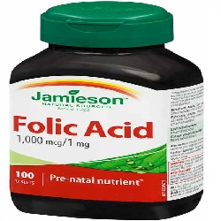

Folic Acid

Folic Acidသည္
- ဗိုက္တာဗင္ ဘီ အုပ္စုဝင္ ေဆးျဖစ္သည္။
- ဗိုက္တာမင္ ဘီသည္ ေရတြင္ ေပ်ာ္ဝင္ေသာ ဗိုက္တာမင္ အမ်ိဳးအစား ျဖစ္သည္။
- ေဖာလစ္အက္စစ္ကို အသီးအႏွံ႕မ်ား (ဖရဲသီး သံပုရာ ) ဟင္းသီးဟင္းရြက္မ်ား ပဲအမ်ိဳးမ်ိဳး ကလီစာမ်ား စေသာ အစာမ်ားကို စားျခင္းျဖင့္လည္း ရရိွႏိုင္သည္။
- ေဖာလစ္အက္စစ္ ခ်ိဳ႕တဲ့ပါက ေသြးအားနည္းတတ္သည္။
အသုံးဝင္ပုံ
- ေက်ာက္ကပ္ေရာဂါသမားမ်ားတြင္ Homocysteine ဓါတ္မ်ား မ်ားေနတတ္သည္။ Homocysteine မ်ားပါက ႏွလုံးေရာဂါႏွင့္ ေလျဖတ္ျခင္းကို ျဖစ္ေစသည္။
- Folic Acid သည္ Homocysteine ကို ေလ်ာ့နည္းေစျခင္းျဖင့္ ႏွလုံးေရာဂါႏွင့္ ေလျဖတ္ျခင္းကို ကာကြယ္ေပးသည္။
- ကိုယ္ဝန္ေဆာင္ (အဓိက အားျဖင့္ ပထမသုံးလ) ခ်ိန္တြင္ Folic Acid ပုံမွန္ ေသာက္ျခင္းျဖင့္ ကေလးမ်ားတြင္ ေမြးရာပါ အာရုံေၾကာ အားနည္း ခ်ဳိ႕တဲ့ျခင္းကို ကာကြယ္ေပးသည္။
- ထို႔အျပင္ စိတ္က်ျခင္း ေသြးေပါင္ခ်ိန္ေလ်ာ့ခ်ေပးျခင္း သြားဖုံေရာဂါမ်ား သက္သာေစျခင္း ေသြးကင္ဆာ လကၡဏာမ်ား သက္သာေစပါသည္။
- အခ်ဳိ႕ေသာ ေလ့လာမႈမ်ားအရ အယ္ဇိုင္းမား အတိတ္ေမ့ေရာဂါ ျဖစ္ပြားမႈ ေလ်ာ့နည္းျခင္းႏွင့္ မွတ္ဥာဏ္ေတြးေခၚမႈမ်ား တိုးတက္လာေစပါသည္။
သုံးစြဲပုံ
- ပုံမွန္အားျဖင့္ တစ္ေန႕ကို ၂၅၀ မွ ၁၀၀၀ မိုက္ခရိုဂရမ္ အတြင္းေသာက္ႏိုင္သည္။
- သို႔ရာတြင္ ေရာဂါႏွင့္ အေျခအေန ေပၚမူတည္၍ ပမာဏအနည္းအမ်ား ကြာျခားသည္။
- ကိုယ္ဝန္ေဆာင္မ်ားတြင္ ကိုယ္ဝန္ေဆာင္အားေဆးမ်ား သုံးစြဲေနပါက Folic Acid ကို ထပ္ေသာက္ရန္ မလိုပါ။
- သို႔မဟုတ္ ေဆးမေသာက္ခ်င္ပါက Folic Acid ၾကြယ္ဝေသာ အစားအစာမ်ား စားလ်ွင္လည္းရသည္။
ေဘးထြက္ဆိုးက်ိဳးမ်ား
Folic Acid သည္ မ်ားေသာအားျဖင့္ ေဘးထြက္ဆိုးက်ိဳးမ်ား မရိွပါ။ သို႔ရာတြင္ ပမာဏမ်ားမ်ား ေသာက္မိပါက–
- ဗိုက္ေအာင့္ျခင္း
- ဝမ္းေလ်ွာျခင္း
- အနီကြက္မ်ားထြက္ျခင္း
- ပ်ိဳ႕ျခင္း
- အန္ျခင္း
- ေခါင္းကိုက္ျခင္း စသည္တို႔ ျဖစ္တတ္သည္။
သတိျပဳရမည့္အခ်က္မ်ား
- ကိုယ္ဝန္ေဆာင္ႏွင့္ ႏို႔တိုက္မိခင္မ်ားတြင္ ၃၀၀ မွ ၄၀၀ မိုက္ခရိုဂရမ္ အတြင္းသာ ေသာက္သင့္သည္။
- Folic Acid သည္ ေသြးေၾကာက်ဥ္းႏွင့္ ကင္ဆာ ေရာဂါ သမားမ်ားတြင္ မေသာက္သင့္ပါ။
ေဆးအာနိသင္
Fosphenytoin, Methotrexate, Phenobarbital, Phenytoin ႏွင့္ Pyrimethamine စေသာ ေဆးမ်ားႏွင့္ တြဲမေသာက္သင့္ပါ။
ေဆးအလြန္အကၽြံသုံးစြဲျခင္း
- အမ်ားအားျဖင့္ Folic Acid သည္ ေရတြင္ေပ်ာ္ဝင္ေသာေၾကာင့္ ေဆးပမာဏမ်ားမ်ား ေသာက္မိပါက ဆီးထဲမွ စြန္႔ပစ္ေလ့ရိွသည္။
- Folic Acid ပမာဏမ်ားမ်ားကို ေရရွည္စြဲေသာက္ပါက ႏွလုံးေရာဂါႏွင့္ အဆုတ္ကင္ဆာ ျဖစ္ႏိုင္ေျခ ရိွေၾကာင္း ေလ့လာမႈ တစ္ခုက ဆိုသည္။
- ေဆးေတြကို ဘယ္ေဆးမဆို ဆရာ၀န္ ဒါမွမဟုတ္ တတ္ကၽြမ္းနားလည္တဲ့ က်န္းမာေရး၀န္ထမ္းေတြရဲ႕ ညႊန္ၾကားခ်က္အတိုင္း တိတိက်က် ေသာက္သင့္ပါတယ္။
- မိမိသေဘာနဲ႔ေဆးရပ္လိုက္တာမ်ဳိး မလုပ္သင့္ပါဘူး။
- ေဘးထြက္ဆိုးက်ဳိး ျပင္းျပင္းထန္ထန္ ခံစားရရင္ေတာ့ ဆရာ၀န္နဲ႔တိုင္ပင္ဖို႔ လိုအပ္ပါတယ္။
Source– ေဒါက္တာခ်စ္စႏီၵေက်ာ္